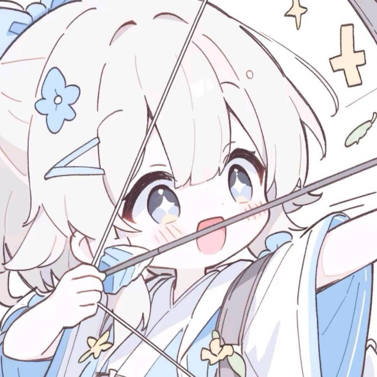
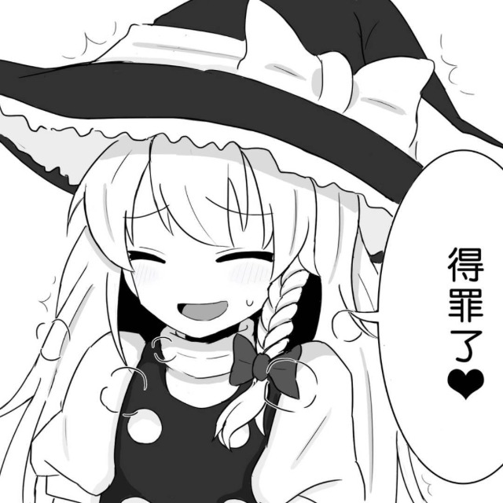
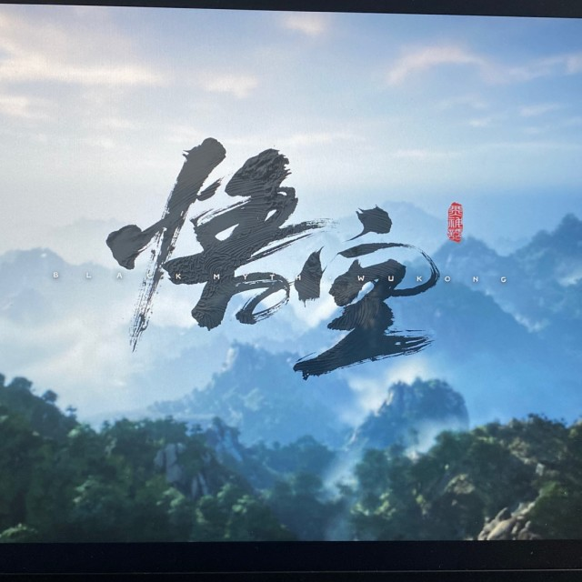
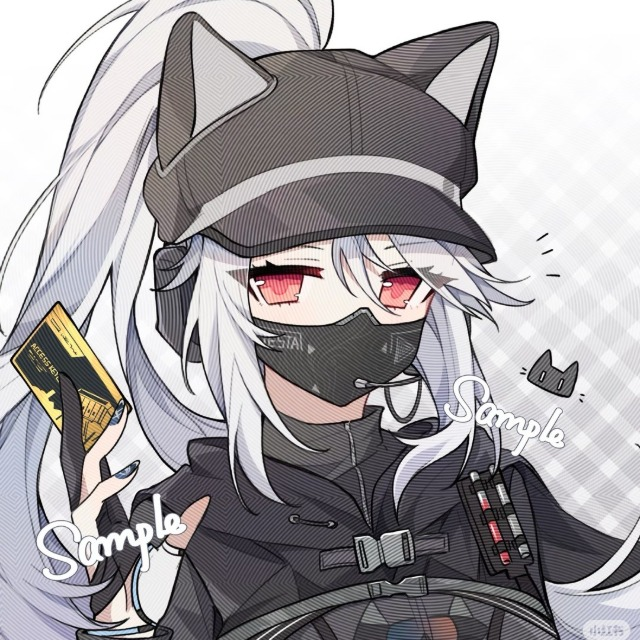
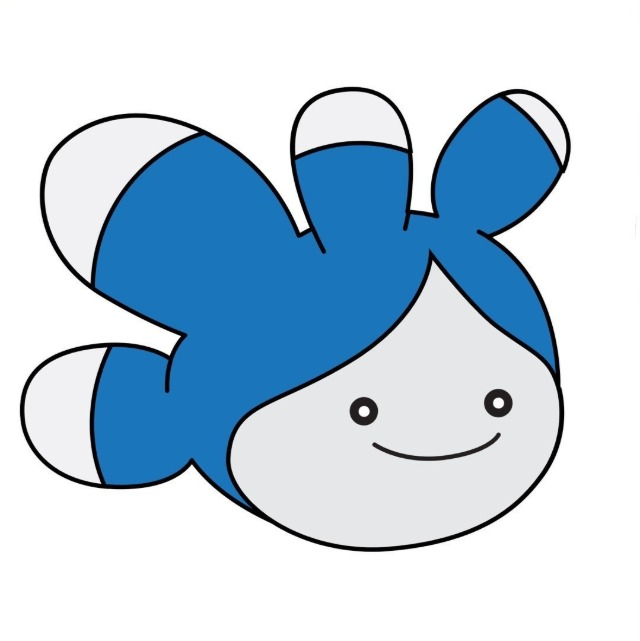
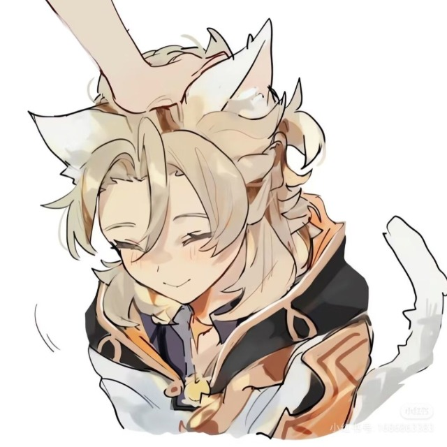
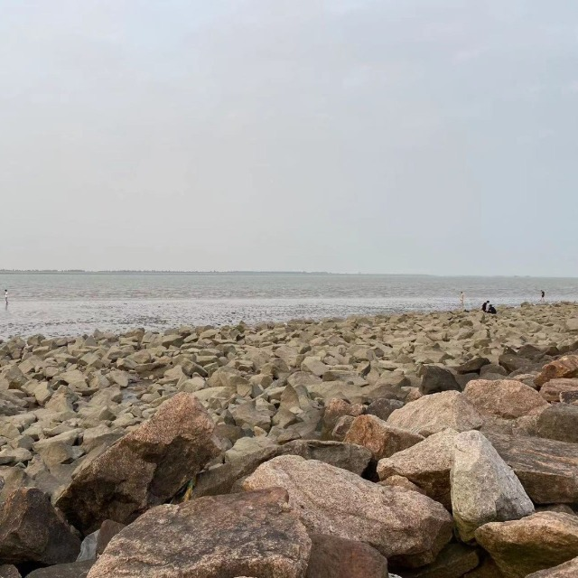
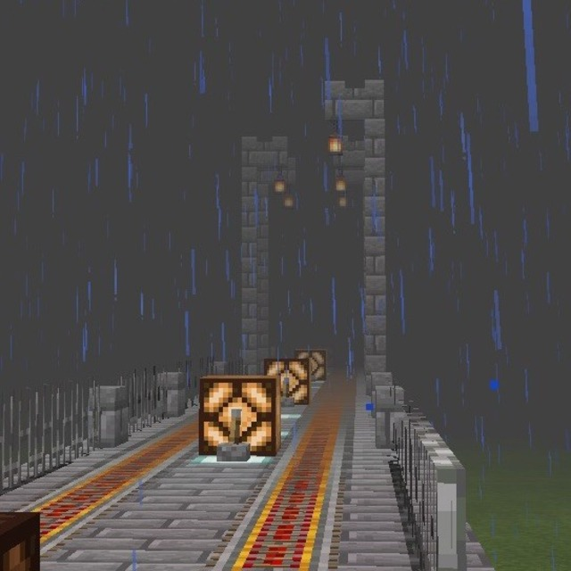
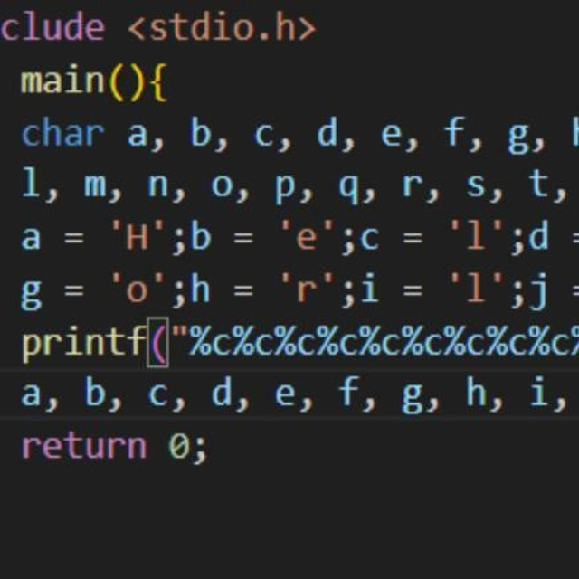

为服务器辛勤付出的玩家们
update:2026.3.1
头像为各位的QQ头像
FeCl23
低配玩家，手持红米note13pro（腐竹补充：早知道当时给他推荐二手手机了），尽管设备不佳，但他为服务器做出了大量的贡献，无论是原版服还是枪战联机，都有他积极参与的身影。
Crafting_Tables
开服元老，在服务器诞生之初就加入了服务器，在原版服建造了空置域船吸刷怪塔、超级刷石机等巨型机械，是名副其实的红石大佬。（腐竹补充：技术在我之上上上上）
newbie_Ffish
服务器服主，喜欢在mc原版的条件下，建造各种红石机器。为了“独乐乐不如众乐乐”，他创建了这个服务器，和朋友们一起玩mc。如今，服务器不仅有原版生存服，还有枪战联机，和mod服务器（已去世）。

为服务器的官网贡献了云服务器和域名；会在原版生存服务器里刷新。
zhangzhy
手游大手子，积极参与枪战服，掌握全陀螺仪技术。同时，还是一位跑步健身大佬，
mayezixuan
端游FPS大手子，积极参与枪战服，并且技术无人能敌。

神秘玩家，在服务器上线次数较少，但是他（她）纠正了腐竹的暴躁脾气，引导腐竹走向正路。
mogui_hao
开服元老，在服务器诞生之初就加入了服务器，休闲玩家，在原版服偶尔上线。
Netheriteman
FeCl23的好同学，和FeCl23一样是低配玩家，但是在原版生存服务器上十分活跃。

在服务器的各个项目均有涉猎，更经常参与枪战联机，贡献了“城堡”地图，内饰十分精美。

忠实果粉，iOS26.4beta基岩版玩家。服务器在24年1月至4月开放基岩版服务器，这位在当时加入服务器，并活跃于其中。

曾经的物理腐竹，提供了自己的服务器，帮助腐竹开服。在基岩版服务器时期活跃。
meicaikourou
原版服老玩家，目标是完成全成就。

美术大佬，在原版服里建造了很多精美的建筑

会在原版服中闲逛，也会参与枪战联机。

一位军迷，目标是在原版服中建造各式各样的航母。
cole_er
原版生存服务器老玩家，忠诚的共产主义者，愿望是让共产主义的红旗插满全世界。

神秘玩家，会在原版生存服务器里刷新；QQ动态里产出大量优质屌图。